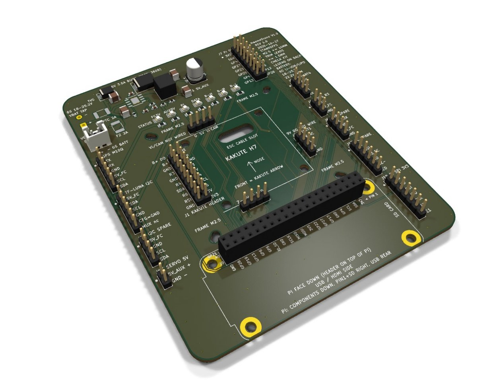

Assembly and bring-up¶
Build the board, prove the 5 V rail on a bench supply with nothing plugged in, then add the Kakute, the Pi and each peripheral one at a time.

Soldering the board¶
- Check the JLC-assembled board: look for bridges on U2's pins and check that D8, D9 and C1 sit the right way round.
- U1 Pi socket: tack one pin at each end, check it sits square and flat, then solder the rest. A tilted socket stops the face-down Pi seating.
- Kakute headers J1, J23, J24, J25, then the peripheral and spare headers you need (J8, J9, J10, J11, J13; J6, J7, J12, J17, J18 optional), then the J20 JST socket.
- J3 battery wires: 18 AWG, red to "+", black to "−". Leave the other ends free for now.
- Trim every lead underneath to 1.5 mm or less.
Kakute harness¶

- Solder 26–28 AWG wires to the Kakute pads named in the J1, J23, J24 and J25 tables.
- Leave B+, Vo, Vi, CAM and 9V unwired. They have no net on the board, and B+ on a signal pin would destroy parts.
- Crimp the other ends into Dupont housings in the same order as the headers, pin 1 to the square pad.
- Before plugging in, beep each wire from the Kakute pad to its header pin. Check the J1 rows aren't swapped: pin 1 is B+ (unwired), pin 2 Vo (unwired), pins 3 and 4 GND.
First power-up¶
- Bench supply on J3: about 20 V, current limit about 0.3 A, nothing plugged into any header. The AUX5V LED should light.
- Measure J6 pin 1 or J13: 5.0 to 5.1 V. If it is wrong, stop and check U2 and R10/R11 before going further.
- Kakute: plug in the harness, then power the Kakute as normal (USB or ESC). The FC5V LED lights when the Kakute's 5 V rail is up; whether USB alone powers that rail is unconfirmed. Measure 5 V on J10 pin 2.
- Pi: check the orientation twice (pin 1 at the right, rear row; SD right; USB/HDMI rear), then plug it in face down and power from J3. The Pi boots from 5V_AUX.
- Peripherals, one at a time, checking each in Mission Planner before the next: GPS (J8), then receiver (J10), then SiK (J9), then TF-Luna (J11), then servo (J13 power + Kakute M5 signal).
- Then connect J3 to the ESC's battery pads and do the full system check on the real battery: Pi ready message, arming gate, LEDs, and a servo and motor test with the props off.
Tip
If the barometer reports "unable to initialise" after you add an I2C device, unplug the device: a wrong SDA/SCL lead holds the bus and stops the baro.